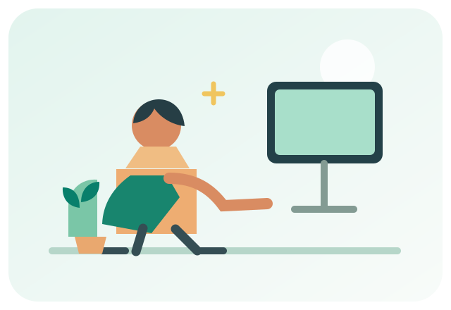
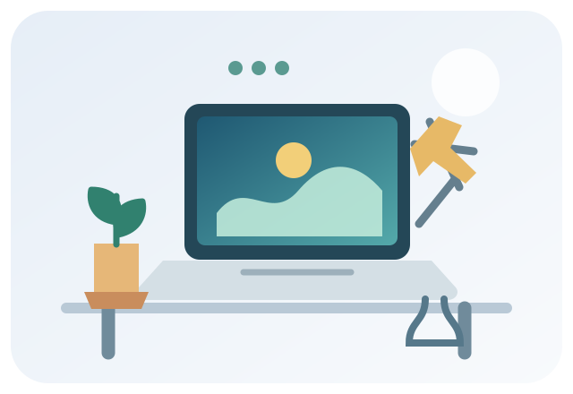
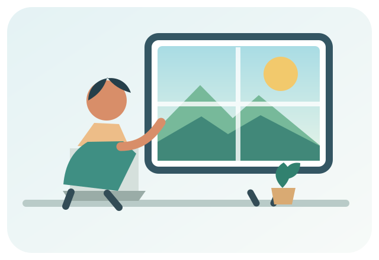
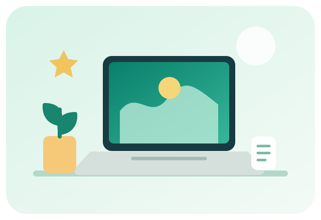

Ergonomía
Una postura cómoda
Ajusta la pantalla, apoya la espalda y mantén los pies firmes en el piso.
Ver recomendacionesInicio / Galería
Imágenes e ideas para cuidar el equipo, proteger la información, mantener una postura cómoda y hacer pausas saludables.


Ajusta la pantalla, apoya la espalda y mantén los pies firmes en el piso.
Ver recomendaciones
Cada 20 minutos, mira algo a unos 6 metros durante 20 segundos.
Conocer la regla 20-20-20Apaga y desconecta el equipo antes de limpiarlo con un paño suave y seco.
Ver cuidados del equipoUsa contraseñas seguras, actualiza tus dispositivos y revisa los enlaces.
Aprender sobre seguridadDeja libre la zona de trabajo y organiza los cables para evitar tropiezos.
Más consejos para el equipo
Combina hábitos saludables para cuidar tu equipo y trabajar mejor.
Volver al inicio